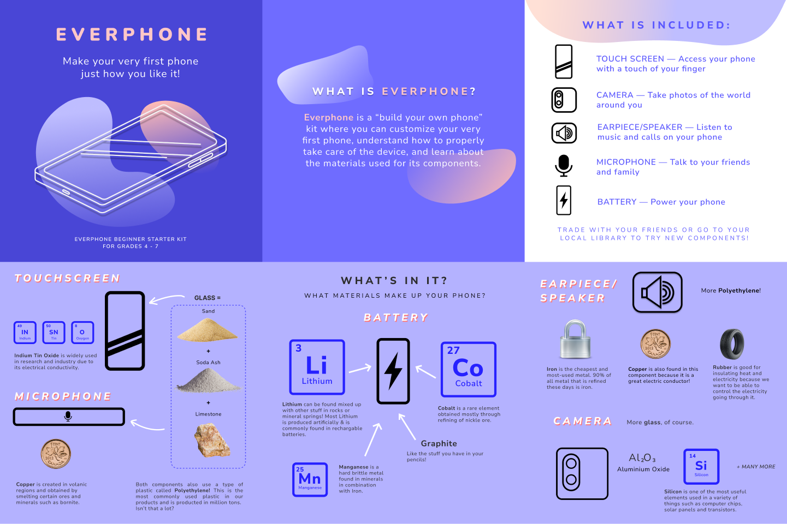
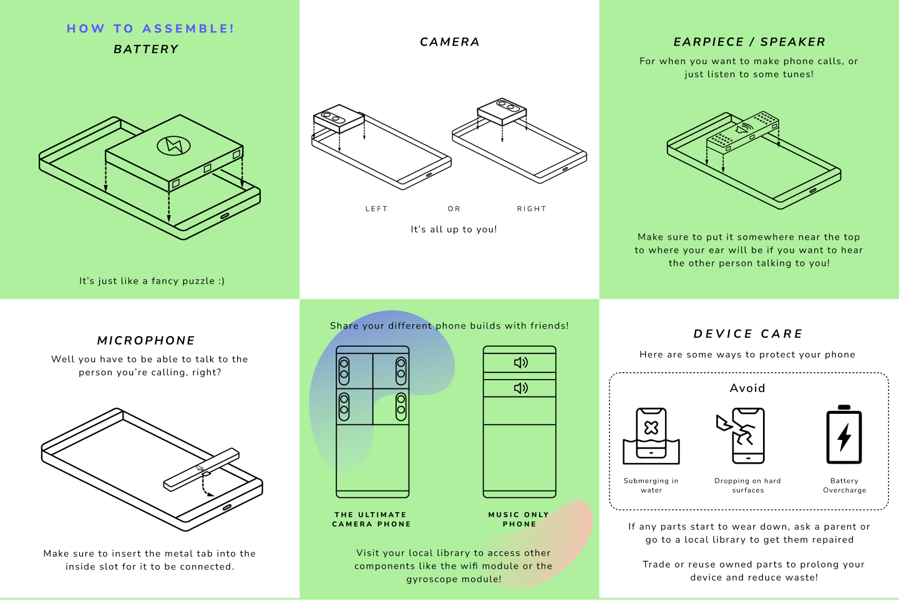

Everphone.
Description:
Everphone is a speculative design project aimed to explore the potential of alternate futures and to provoke thought in those who decide to interact with this project. The main theme of this project is planned obsolescence, with our message being conveyed through a phone kit mockup portraying an alternate timeline of the present where appreciation for material use in our every day electronics are taught at a young age (elementary). We came up with this idea to promote more care and awareness in our objects to prolong its lifespan rather than simply replacing it due to it breaking easily or going "out of fashion".
Skills:
Research + Design + Print
Team:
Christine Drummond, Adrian Soliman, David Nguyen
Length:
8 weeks
Tools:
Google Drive + Google Docs + Figma + Zoom
00. Everphone Brochure
This is the final brochure design, where I planned the layout, picked the overall colour palette and created the isometric phone diagrams.
 01. Everphone Design Workbook
This workbook contains details of the entire project from start to finish, with perspectives from each member near the end.
Click on the image below to download the full PDF.
02. Challenges
The biggest challenge I faced during the project was team management because of all the varying availability my team mates had. Often we would find ourselves meeting together online on Zoom in the evenings every week, which would already be rough since it would be after all of our other activities that would take up the rest of the day (e.g. work, other classes, etc.). I also ran into some issues of some team mates being unresponsive throughout the week to arrange meetings to work on the project together where I tried to encourage more feedback from them, in the end the project managed to come together.